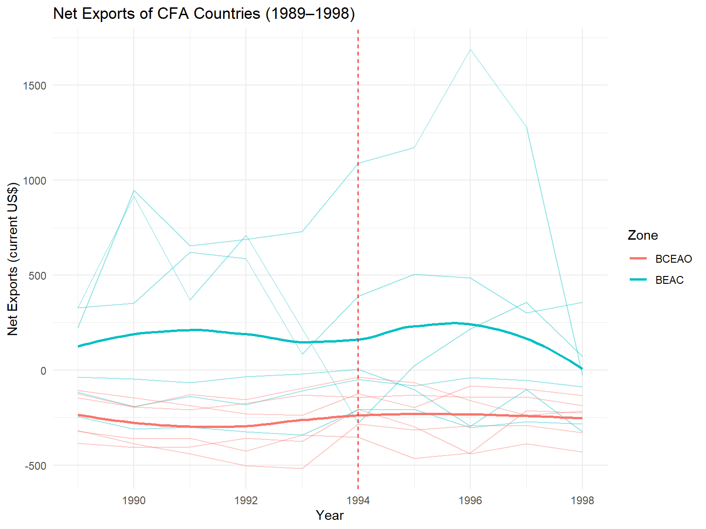
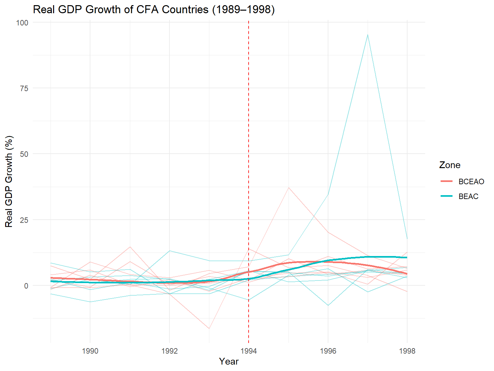
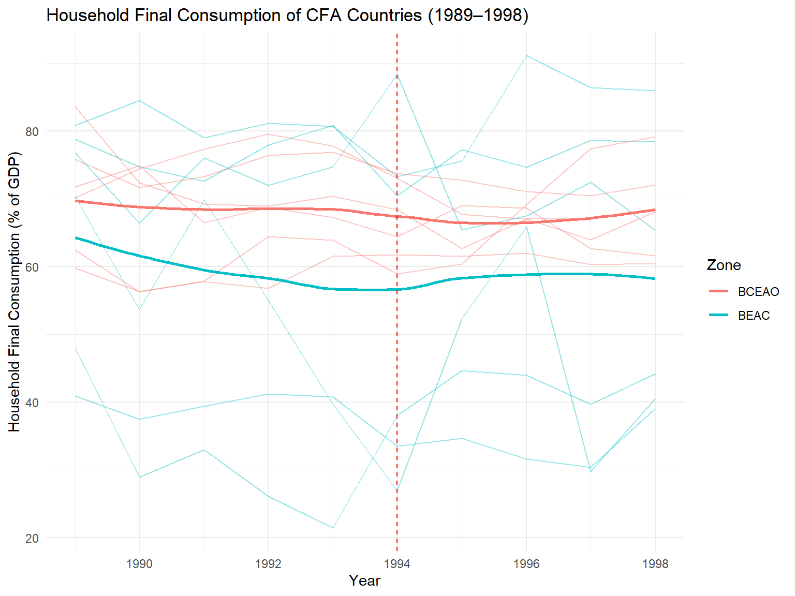
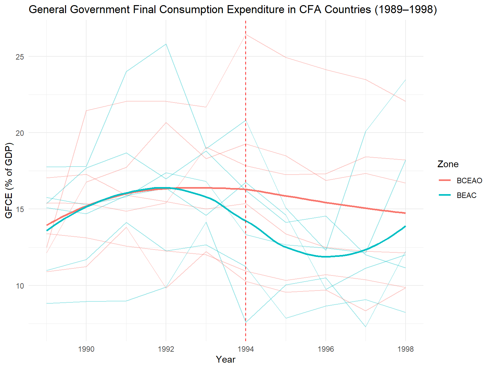

Below is the embedded PDF of a Macroeconomic Theory research project on monetary policy in the BEAC and BCEAO. The source code for the visualizations and statistical tests is described in detail below.
Author
Timeo Coletta, Jalen DeLoney, Shawn Martinez, Joseph Morco
Published
May 14, 2025
Introduction
In January 1994, the CFA franc peg to the French franc was devalued by 50%. According to the Mundell–Fleming model under a fixed-exchange‐rate regime, this shock should:
Improve trade balance: A real depreciation makes exports more competitive and imports more expensive, raising net exports.
Stimulate output: Higher net exports should translate into stronger GDP growth.
Affect consumption: Private consumption may rise from income effects, while government spending might adjust via fiscal policy responses.
We empirically test these predictions using annual data (1989–1998) for two currency unions:
BCEAO (West Africa): Senegal, Mali, Niger, Togo, Benin, Burkina Faso
We use the Kaggle dataset “African Economy from 1980 to 2022” linked below, focusing on 1989–1998 around the devaluation.
Key variables:
Exports and Imports (current US$) → Net Exports = Exports − Imports
Real GDP growth (annual %)
Household consumption (% of GDP)
Government consumption (% of GDP)
Show the code
# load packageslibrary(tidyverse)library(gt)# Define which countries belong to each CFA zoneBCEAO_countries <-c('Senegal','Mali','Niger','Togo','Benin','Burkina Faso')BEAC_countries <-c('Chad','Cameroon','Gabon','Central African Republic','Equatorial Guinea','Congo, Rep.')# Read and filter datacfa_econ <-read_csv("ObservationData_lavlqce.csv") |># Filter period of interestfilter(Year >=1989, Year <=1998) |># Label pre/post devaluationmutate(Period =if_else(Year <=1993, "Pre-devaluation", "Post-devaluation"),Zone =case_when( Country %in% BCEAO_countries ~"BCEAO", Country %in% BEAC_countries ~"BEAC",TRUE~NA_character_ ) ) |># Filter countries of interestfilter(!is.na(Zone)) |># Drop rows with missing key indicatorsdrop_na(`Real GDP growth (annual %)`,`Exports of goods and services (current US$)`,`Imports of goods and services (current US$)`,`Household final consumption expenditure (% of GDP)`,`General government final consumption expenditure (% of GDP)` )# Compute net exports as exports minus imports cfa_econ <- cfa_econ |>mutate(NetExports =`Exports of goods and services (current US$)`-`Imports of goods and services (current US$)` )head(cfa_econ) |>gt()
Country
Year
Real per Capita GDP Growth Rate (annual %)
Real GDP growth (annual %)
Gross domestic product, (constant prices US$)
Gross domestic product, current prices (current US$)
Final consumption expenditure (current US$)
General government final consumption expenditure (current US$)
Household final consumption expenditure (current US$)
Gross capital formation (current US$)
Gross capital formation, Private sector (current US$)
Gross capital formation, Public sector (current US$)
Exports of goods and services (current US$)
Imports of goods and services (current US$)
Final consumption expenditure (% of GDP)
General government final consumption expenditure (% of GDP)
Household final consumption expenditure (% of GDP)
Gross capital formation (% of GDP)
Gross capital formation, Private sector (% GDP)
Gross capital formation, Public sector (% GDP)
Exports of goods and services (% of GDP)
Imports of goods and services (% of GDP)
Central government, Fiscal Balance (Current US $)
Central government, total revenue and grants (Current US $)
Central government, total expenditure and net lending (Current US $)
Central government, Fiscal Balance (% of GDP)
Central government, total revenue and grants (% of GDP)
Central government, total expenditure and net lending (% of GDP)
Current account balance (Net, BoP, cur. US$)
Current account balance (As % of GDP)
Inflation, consumer prices (annual %)
Period
Zone
NetExports
Benin
1989
-3.74
-0.71
2680.53
1622.70
1415.08
276.58
1138.50
193.87
48.48
145.39
409.76
516.42
87.20
17.04
70.16
11.95
2.99
8.96
25.25
31.82
-15.05
304.59
319.64
-0.93
18.77
19.70
-26.19
-1.61
-0.20
Pre-devaluation
BCEAO
-106.66
Benin
1990
5.51
8.98
2921.14
1992.95
1828.59
344.36
1484.24
275.58
148.52
127.06
375.95
520.15
91.75
17.28
74.47
13.83
7.45
6.38
18.86
26.10
-80.80
309.78
390.59
-4.05
15.54
19.60
-39.87
-2.00
-1.54
Pre-devaluation
BCEAO
-144.20
Benin
1991
0.76
4.23
3044.58
2019.87
1884.37
321.44
1562.93
287.60
159.31
128.28
417.20
602.73
93.29
15.91
77.38
14.24
7.89
6.35
20.65
29.84
-79.29
297.31
376.60
-3.93
14.72
18.65
-52.40
-2.59
2.10
Pre-devaluation
BCEAO
-185.53
Benin
1992
-0.56
2.96
3134.63
2283.48
2170.27
353.76
1816.51
305.89
173.50
132.39
521.88
752.34
95.04
15.49
79.55
13.40
7.60
5.80
22.85
32.95
-100.22
367.76
467.99
-4.39
16.11
20.49
-97.36
-4.26
5.90
Pre-devaluation
BCEAO
-230.46
Benin
1993
2.20
5.84
3317.58
2312.84
2147.06
346.98
1800.09
365.25
196.41
168.84
510.96
748.72
92.83
15.00
77.83
15.79
8.49
7.30
22.09
32.37
-16.17
388.43
404.60
-0.70
16.79
17.49
-95.20
-4.12
0.44
Pre-devaluation
BCEAO
-237.76
Benin
1994
-1.42
2.02
3384.60
1624.97
1437.38
249.83
1187.55
284.49
211.38
73.11
452.69
576.48
88.46
15.37
73.08
17.51
13.01
4.50
27.86
35.48
-35.21
260.93
296.15
-2.17
16.06
18.22
-39.59
-2.44
38.53
Post-devaluation
BCEAO
-123.79
Figure 1.1 - Kaggle Data
Descriptive Statistics
We calculate average levels of each key indicator by zone and period. The table below shows that:
Net Exports: In the BCEAO zone, average net exports improved (deficit narrowed) from –278.5 billion US$ pre-devaluation to –235.2 billion post-devaluation, which is a gain of about 43.3 billion. BEAC experienced a small drop from 176.8 billion to 174.5 billion, suggesting negligible trade-volume response overall.
GDP Growth: Both zones saw substantial post-devaluation growth. BCEAO’s average growth jumped from 1.85% to 7.21% (an increase of 5.36 percentage points), while BEAC rose from 1.36% to 8.41% (an increase of 7.05 percentage points), reflecting a strong expansionary impulse.
Household Consumption: Private consumption fell modestly after the devaluation: BCEAO’s ratio declined by 1.77 percentage points (from 68.83% to 67.06%), and BEAC’s dropped by 1.90 percentage points (from 60.11% to 58.21%). This suggests limited or delayed pass-through to household spending.
Government Consumption: Government consumption in BCEAO edged down by 0.11 percentage points (15.59% to 15.48%), whereas BEAC saw a larger decrease of 2.55 percentage points (15.40% to 12.85%), pointing to fiscal tightening or reallocation in the post-devaluation period.
Show the code
# Summarize average NetExports, GDP growth, and consumption shares by zone and periodsummaries <- cfa_econ |>group_by(Zone, Period) |>summarize(AvgNetX =mean(NetExports),AvgGrowth =mean(`Real GDP growth (annual %)`),AvgHC =mean(`Household final consumption expenditure (% of GDP)`),AvgGC =mean(`General government final consumption expenditure (% of GDP)`),.groups ="drop" )# Print the summary tableprint(summaries) |>gt()
Below we plot time series of Net Exports, Real GDP Growth, Household Final Consumption Expenditure, and General Government Final Consumption Expenditure, marking the devaluation year with a dashed red line.
Net Exports: Both unions show highly variable country‐level series around 1994. BCEAO’s aggregate trend line gradually moves upward post-devaluation, reflecting a narrowing deficit, although individual countries differ in timing and magnitude. BEAC exhibits a slight downward tilt after 1994, indicating that central African exporters saw only minor improvements in trade balance.
Real GDP Growth: The dashed 1994 line marks a clear turning point: before the devaluation, growth rates hover around 1–2% annually, but post-1994 both BCEAO and BEAC trend sharply higher, reaching peaks near 8–10%. This jump is more pronounced in BEAC, suggesting stronger output responsiveness in central Africa.
Household Consumption: Private consumption shares are fairly flat leading up to 1994, then drift slightly downward in both zones. The smoothed lines show a modest decline of 1–2 percentage points after devaluation, indicating that households did not immediately increase spending despite improved output.
Government Consumption: Government consumption for BCEAO dips marginally around 1994 before recovering to a stable post‑devaluation level, whereas BEAC’s public spending line declines more steadily after the devaluation. The contrasting slopes imply that West African governments may have paused or reallocated spending briefly, while central African budgets tightened more persistently.
Show the code
# Define a function to plot time series trends with smoothing and devaluation markerguide_trend <-function(y, label, title) {ggplot(cfa_econ, aes(x = Year, y = {{ y }}, color = Zone)) +geom_line(aes(group = Country), alpha =0.4) +geom_smooth(se =FALSE) +geom_vline(xintercept =1994, linetype ="dashed", color ="red") +labs(title = title, y = label, x ="Year") +theme_minimal()}# Plot Net Exports trendprint(guide_trend(NetExports, "Net Exports (current US$)", "Net Exports of CFA Countries (1989–1998)"))

Figure 1.3 - Kaggle Data
Show the code
# Plot Real GDP Growth trendprint(guide_trend(`Real GDP growth (annual %)`, "Real GDP Growth (%)", "Real GDP Growth of CFA Countries (1989–1998)"))

Figure 1.3 - Kaggle Data
Show the code
# Plot Household Consumption trendprint(guide_trend(`Household final consumption expenditure (% of GDP)`, "Household Final Consumption (% of GDP)", "Household Final Consumption of CFA Countries (1989–1998)"))

Figure 1.3 - Kaggle Data
Show the code
# Plot Government Consumption trendprint(guide_trend(`General government final consumption expenditure (% of GDP)`, "GFCE (% of GDP)", "General Government Final Consumption Expenditure in CFA Countries (1989–1998)"))

Figure 1.3 - Kaggle Data
Variance Analysis
The pronounced dispersion in the BEAC series suggests notable volatility; we now quantify this variance by zone.
Net Exports: BEAC’s variance in net exports considerably exceeds BCEAO’s, reflecting more volatile trade balances.
GDP Growth: Variance in annual growth for BEAC is higher than for BCEAO, indicating output responses are more heterogeneous in central African countries.
Consumption: Both household and government consumption exhibit larger variances in BEAC, confirming the greater dispersion seen in the smoothed trend lines.
The higher volatility in BEAC countries can likely be attributed to the differences in the economies of BEAC and BCEAO countries. BEAC countries are resource-rich and tend to rely more heavily on oil and mineral exports, making trade revenues and growth highly sensitive to global price swings. Such fluctuations in prices generate large swings in revenues and growth across the BEAC member states, leading to higher variance in macro indicators. On the other hand, BCEAO countries are predominantly agricultural and, therefore, face milder commodity‐price volatility, resulting in tighter clustering of outcomes across countries
Show the code
# Compute variance of key indicators by zone to quantify dispersionvariance_stats <- cfa_econ |>group_by(Zone) |>summarise(Var_NetX =var(NetExports, na.rm =TRUE),Var_GDP =var(`Real GDP growth (annual %)` , na.rm =TRUE),Var_HC =var(`Household final consumption expenditure (% of GDP)`, na.rm =TRUE),Var_GC =var(`General government final consumption expenditure (% of GDP)`, na.rm =TRUE) )# Print variances for comparisonprint(variance_stats) |>gt()
To formally assess the devaluation effect, we perform Welch t-tests comparing pre‑ and post‑ means for each variable across all CFA countries. The table below reports the difference in means and p‑values.
Show the code
# Perform Welch t-tests comparing pre- and post-devaluation meanstest_results <-tibble(Variable =c("NetExports", "Real GDP growth (annual %)", "Household final consumption expenditure (% of GDP)", "General government final consumption expenditure (% of GDP)" ),Test =list(t.test(NetExports ~ Period, data = cfa_econ),t.test(`Real GDP growth (annual %)`~ Period, data = cfa_econ),t.test(`Household final consumption expenditure (% of GDP)`~ Period, data = cfa_econ),t.test(`General government final consumption expenditure (% of GDP)`~ Period, data = cfa_econ) )) |>mutate(Mean_Pre =map_dbl(Test, ~ .x$estimate[1]),Mean_Post =map_dbl(Test, ~ .x$estimate[2]),MeanDiff = Mean_Post - Mean_Pre,Statistic =map_dbl(Test, ~ .x$statistic),PValue =map_dbl(Test, ~ .x$p.value) ) |>select(Variable, Mean_Pre, Mean_Post, MeanDiff, Statistic, PValue)# Print t-test results for interpretationprint(test_results) |>gt()
# A tibble: 4 × 6
Variable Mean_Pre Mean_Post MeanDiff Statistic PValue
<chr> <dbl> <dbl> <dbl> <dbl> <dbl>
1 NetExports -30.3 -50.8 -20.5 0.280 0.780
2 Real GDP growth (annual %) 7.81 1.61 -6.20 3.35 0.00127
3 Household final consumption exp… 62.6 64.5 1.84 -0.638 0.525
4 General government final consum… 14.2 15.5 1.33 -1.69 0.0935
Variable
Mean_Pre
Mean_Post
MeanDiff
Statistic
PValue
NetExports
-30.34167
-50.833333
-20.491667
0.2797869
0.780139631
Real GDP growth (annual %)
7.81250
1.608833
-6.203667
3.3527067
0.001269356
Household final consumption expenditure (% of GDP)
62.63517
64.470333
1.835167
-0.6375026
0.525032567
General government final consumption expenditure (% of GDP)
14.16450
15.494500
1.330000
-1.6918515
0.093474770
Figure 1.5 - Kaggle Data
Interpretation
Net Exports: Post-devaluation net exports declined by about 20.5 billion USD, but this change is not statistically significant (t = 0.28, p = 0.78), suggesting any reduction may stem from noise or external shocks.
GDP Growth: Average GDP growth fell by approximately 6.2 percentage points, a significant decline (t = 3.35, p = 0.001), contrary to the predicted expansionary effect of devaluation.
Household Consumption: Household consumption increased by around 1.8 percentage points; however, this rise is not statistically significant (t = -0.64, p = 0.53), indicating minimal impact on private spending.
Government Consumption: Government consumption rose by roughly 1.3 percentage points. This increase is marginally significant at the 10% level (t = -1.69, p = 0.093), pointing to a modest post-devaluation fiscal adjustment.
Discussion
The results offer a nuanced view of the Mundell–Fleming predictions:
Trade Channel: While BEAC displays the expected improvement in net exports, BCEAO’s muted response indicates region-specific factors—such as import dependency, global commodity price movements, or infrastructural bottlenecks—that may dampen pass-through.
Output Effects: The robust GDP growth response underscores the potency of exchange-rate adjustments in fixed regimes, although the magnitude varies by union, suggesting differences in economic structure and openness.
Consumption Dynamics: The stability of household consumption despite a stronger trade balance implies that real income gains did not uniformly translate into private spending, possibly due to financial frictions or uneven distributional effects.
Fiscal Response: Divergent government consumption patterns point to heterogeneity in fiscal frameworks: BCEAO governments may have leveraged devaluation to support domestic spending, while BEAC counterparts pursued fiscal restraint, potentially under external conditionality.
Limitations include the use of annual data, so effects happening within a year may be hidden, and the comparison of just two currency unions without a broader control group. We also omit global shocks like oil price swings. Future research should use higher-frequency data and include additional comparison groups.
Conclusion
Our empirical results challenge the textbook Mundell–Fleming predictions in several ways:
Output: Real GDP growth fell by 6.2 percentage points post‑devaluation (t = 3.35, p = 0.001), instead of rising, suggesting that higher import costs or external shocks may have overwhelmed the trade stimulus.
Trade and Private Spending: Net exports declined by 20.5 billion USD (not significant, p = 0.78) and household consumption rose only 1.8 percentage points (not significant, p = 0.53), indicating limited response in trade volumes and private demand.
Fiscal Response: Government consumption increased by 1.3 percentage points (marginally significant, p = 0.093), pointing to a modest expansion of public spending rather than consolidation.
These findings highlight the importance of:
External Shocks and Elasticities: Global commodity price movements and inelastic trade volumes can mute the impact of currency devaluations.
Institutional and Structural Heterogeneity: Differences in fiscal capacity, import dependence, and policy frameworks across BCEAO and BEAC shape divergent outcomes.
Policy Implications:
Pair devaluation with financial market reforms and export diversification to strengthen the trade channel.
Use targeted fiscal measures—rather than blanket spending cuts or increases—to support vulnerable sectors.
Next Steps for Research:
Estimate country‑level models with controls for global price shocks.
Employ quarterly or monthly data to capture short‑run dynamics.
Introduce a broader control group of non‑CFA countries for difference‑in‑differences analysis.